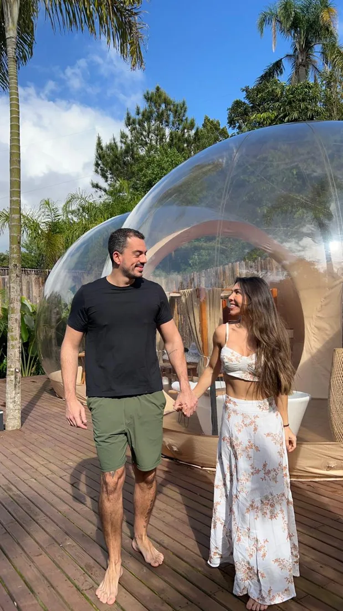

Transforme seu terreno em um empreendimento de hospedagem de sucesso, com o passo a passo de quem opera. Você não precisa construir um grande hotel para começar.
E a terra segue parada há anos, esperando o investidor certo aparecer.
Todo mundo sugere o mesmo chalé. Você sente que tem algo errado nisso.
É bonito. Mas bonito não diz se tem acesso, água, luz e procura.
Quanto custa abrir a porta, quanto sobra e o que acontece se der errado.
Não falta dinheiro no setor de hospedagem. Falta ordem. Quem erra, quase sempre erra num destes três pontos.
Comprou um terreno barato, construiu caro e vai vender a pousada a preço de banana. Fora de ordem, você corrige com concreto. Na ordem, corrige no papel.
Ninguém chega de helicóptero com uma mala de dinheiro para pôr na terra de um terceiro. Terreno não atrai capital. Plano estruturado atrai.
Todos com vista, todos com banheira. O que diferencia? Só o preço. O que é fácil para você é do balcão para dentro. O que vende é do balcão para fora.
| O que você ouviu | Como funciona de verdade |
|---|---|
| Primeiro eu preciso do dinheiro. | Primeiro o plano. Com ele, você conversa com um sócio, um banco ou a Zion de outro jeito. |
| É só fazer um chalé e pôr no Airbnb. | Primeiro o que a sua região não tem. O hóspede não busca paredes, busca experiências. |
| Terreno parado é custo. | Terreno com plano é um ativo em estruturação. Vale mais, até para vender. |
| Para dar certo precisa ser grande. | Comece pequeno, prove a demanda e cresça por fases. |
| Conhecimento é custo. | É a menor linha do investimento, e a que mais economiza. |
O passo a passo na ordem de uma obra real. Cada pilar responde uma pergunta que o papel não responde, e termina com uma página do seu Dossiê de Desenvolvimento.
Cada um tem o seu lugar. A diferença está na ordem em que as decisões são tomadas.
| Fazer por tentativa e erro | Começar pelo arquiteto | Curso genérico de aluguel por temporada | Método Zion 360° | |
|---|---|---|---|---|
| Começa por | A obra | O desenho | O anúncio | O terreno, o mercado e a conta |
| Quem diz se tem procura | Ninguém, até abrir | Fica fora do escopo do desenho | Fala de quem já tem o imóvel pronto | Pilares 1 e 2, com o Leitor de Território |
| Escolhe o produto por | Gosto pessoal ou o vizinho | O que cabe no terreno | O que já existe | O que a região não tem e o público paga |
| A conta aparece | Depois do gasto | No orçamento da obra | Na diária | Antes do primeiro tijolo, em 3 cenários |
| Você sai com | Uma obra | Um projeto | Um anúncio | O Dossiê para sócio, banco, investidor ou a Zion |
| Quem está por trás | Você | Um profissional por vez | Quem ensina, nem sempre opera | Quem opera hospedagem e ensina o que opera |
O arquiteto continua essencial: o método ensina você a dirigir o arquiteto com as decisões certas na mão.
Entre pelo degrau que combina com o seu momento. Cada um leva ao próximo, e nada se perde no caminho.
Em poucos minutos, o que o seu terreno já tem, o que falta e por onde começar.
O curso completo: Marco Zero e 7 pilares, aulas interativas, mentor de IA, e-books e o seu Dossiê em PDF. Acesso por 1 ano e entrada na Zion Land Members.
45 minutos para entender em que etapa está o seu empreendimento e o próximo passo certo. Resumo por escrito em até 48 h.
6 meses. Aula ao vivo toda semana com análise de casos, uma página do Dossiê por tarefa e diagnóstico individual da equipe todo mês.
Tudo do grupo, mais encontros individuais com o Bruno e a revisão de cada página do seu Dossiê por ele.
A equipe Zion monta o Dossiê completo com os dados que você entrega: território, mercado, produto, modelo, masterplan, pré-viabilidade e capital.
O banco de áreas da Zion. Você cadastra o terreno e o Dossiê e fica no radar da Zion. A Zion avalia cada caso: não é promessa de investimento, crédito, compra ou sociedade.
A Bubble Zion, a cabana premium de glamping que a Zion opera. Para quando o plano disser que é o produto certo.
Em breve: as trilhas de gestão e operação e de identidade e vendas, para quem já opera.

A Zion nasceu de um terreno vazio, sem luz, sem água e sem internet. Já operou pousadas e hotéis tradicionais, gastou muito em infraestrutura e retornou pouco. Com o glamping, gastou menos, operou mais e hospedou mais. A Zion errou primeiro, por isso ensina a ordem.
Serve. O método foi feito para quem tem um terreno e não sabe nada de desenvolvimento, de hospedagem ou de imóvel. Cada pilar explica o porquê, o como e o para quê.
Sim. Logo depois do pagamento, o Marco Zero e os 7 pilares ficam liberados, com acesso por 1 ano.
É exatamente quando vale. Terreno não atrai capital: plano estruturado atrai. O Dossiê é o que você leva para a conversa com um sócio, um banco ou a Zion.
Pode ser um dos caminhos, não uma promessa. A Zion só avalia parceria com empreendimento estruturado, e cada caso é avaliado.
Não. O método ensina a estruturar e a decidir na ordem certa. Nenhum material promete renda, retorno, ocupação, crédito ou sociedade.
Ela está na Zion Glamping Store. Mas a bolha é uma parte: o terreno, o mercado e a conta vêm antes. O Raio-X grátis mostra se o seu terreno já está pronto.
Tudo começa de uma visão. Mas visão sem plano fica no sonho.